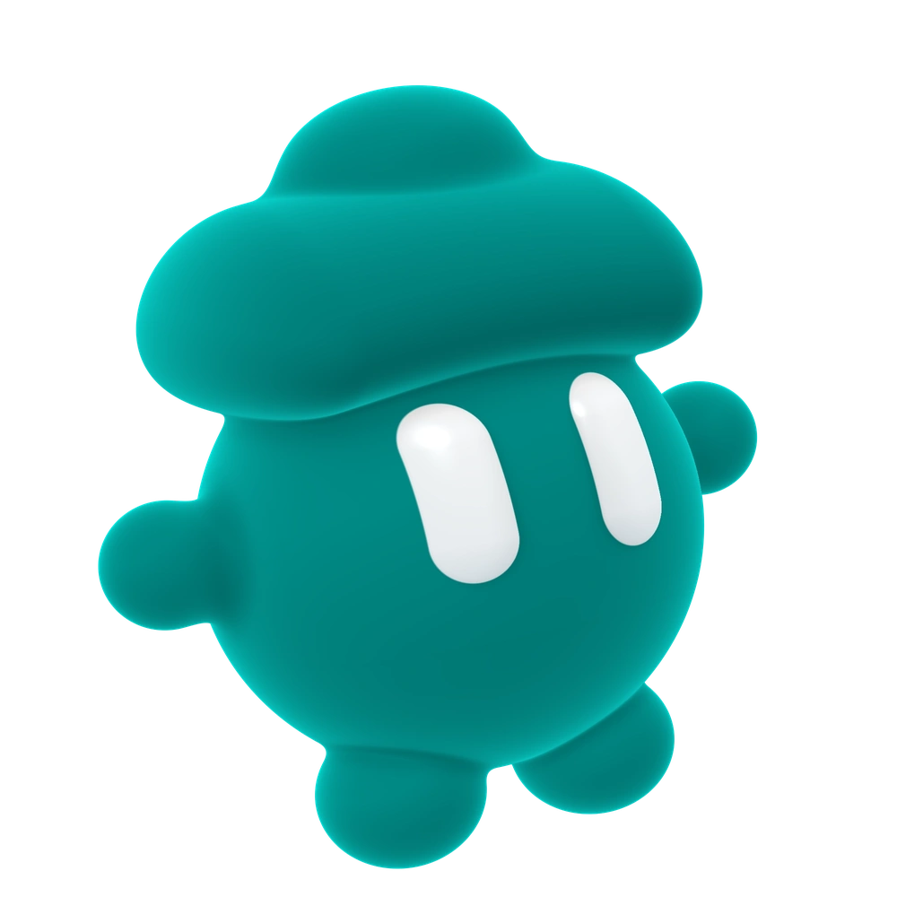
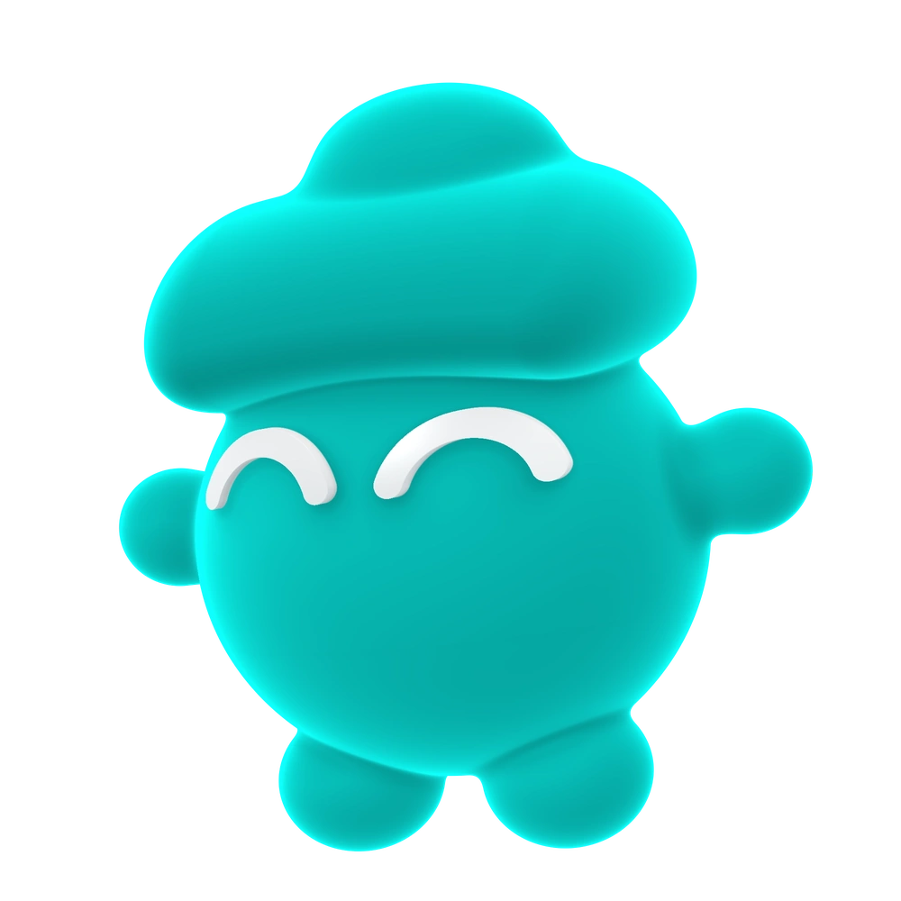
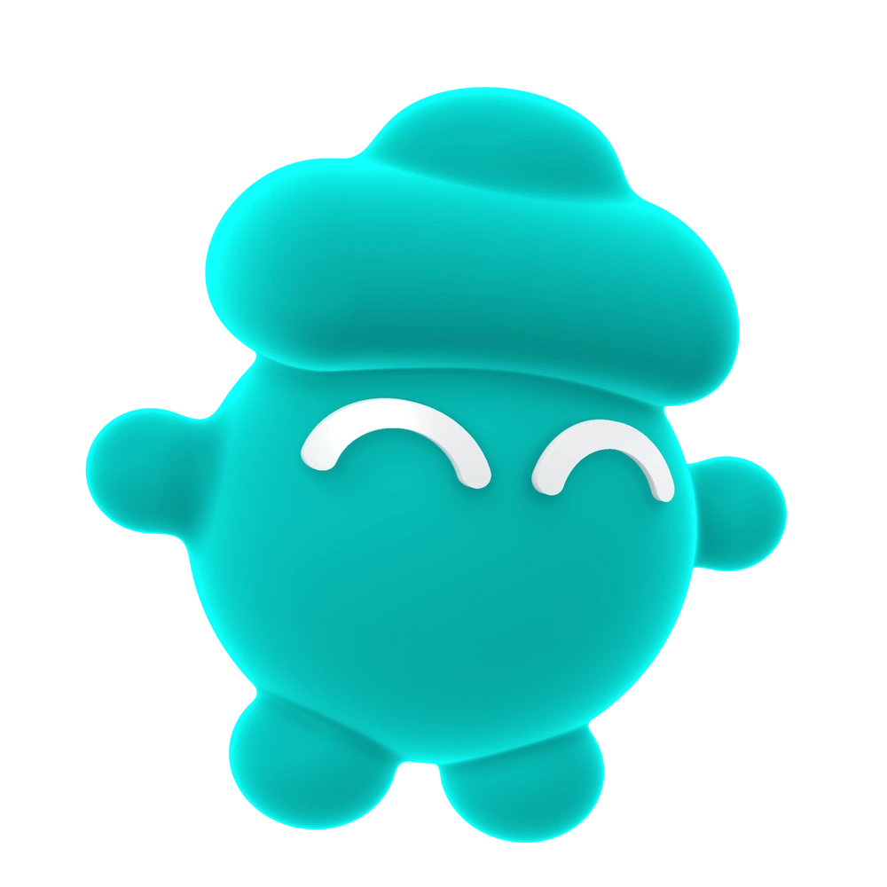
쌓아 온 기록으로
다음 일을 시작해요
컴퓨터에서 한 일을 업무별로 정리하는 macOS 앱
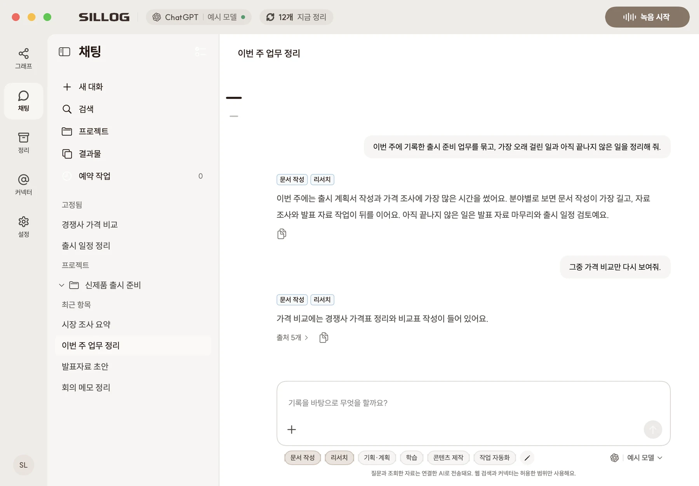
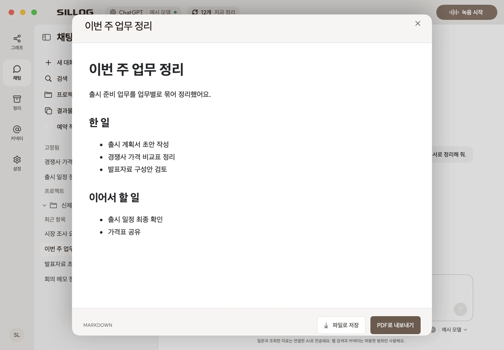
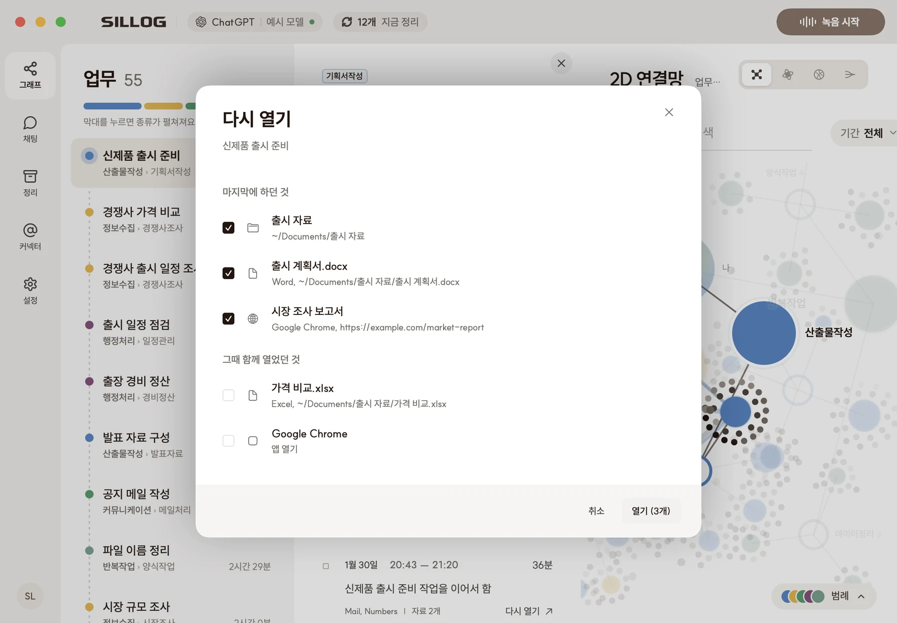
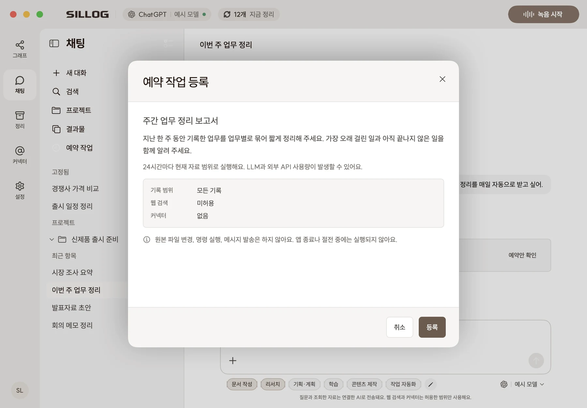
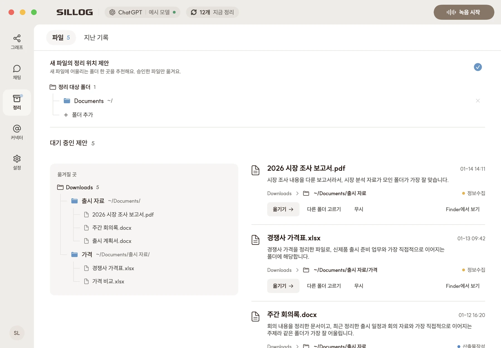
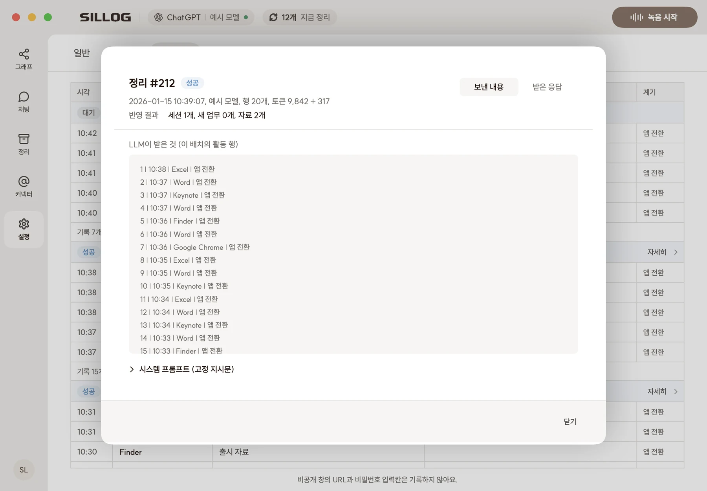
이렇게 부탁하면 돼요
스킬을 고르고 평소 말하듯 부탁하면, SILLOG이 기록에서 필요한 자료를 찾아요.
입력하지 않아도
업무별로 정리돼요
처음 권한을 허용하면, 그 뒤로는 따로 입력하지 않아도 기록해요.
업무와 자료가 그래프로 이어져요
업무, 세션, 자료, 주제를 서로 연결해 저장해요.
2D와 3D 연결망, 원형 차트, 생키 다이어그램으로 바꿔 볼 수 있어요.
기록 원본은 내 Mac에 저장하고
보낸 내용은 직접 확인해요
SILLOG은 자체 서버를 두지 않아요.
업무 정리와 채팅은 내가 연결한 AI 계정으로 해요.
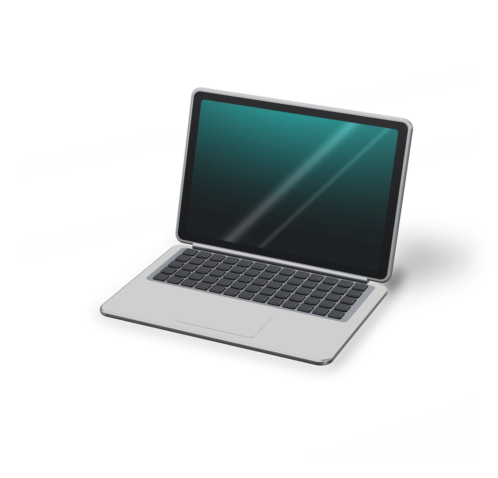
저장
기록은 내 Mac에
저장해요
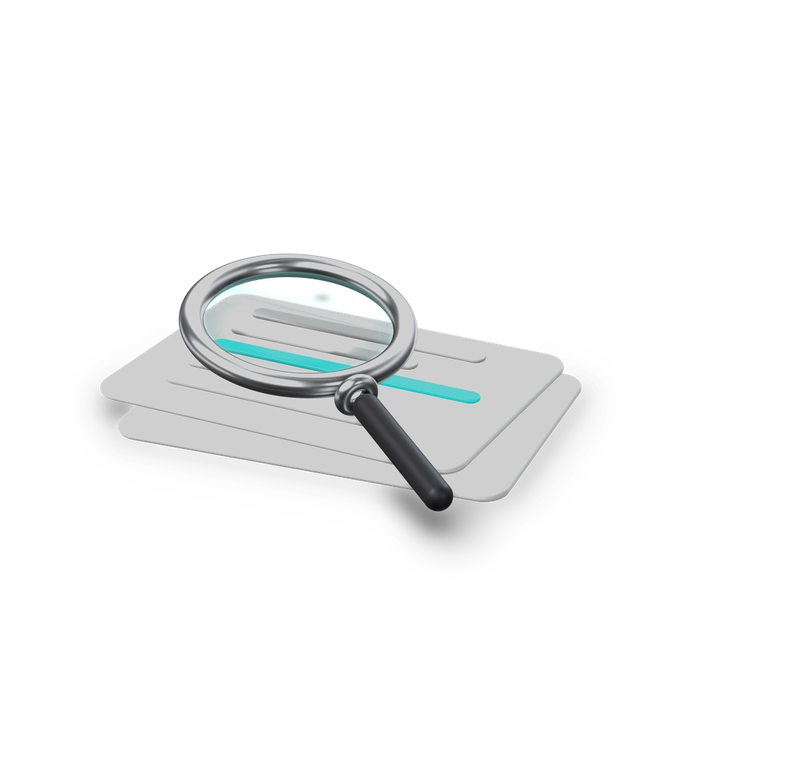
확인
보낸 내용과 받은 결과를
활동 로그에서 봐요
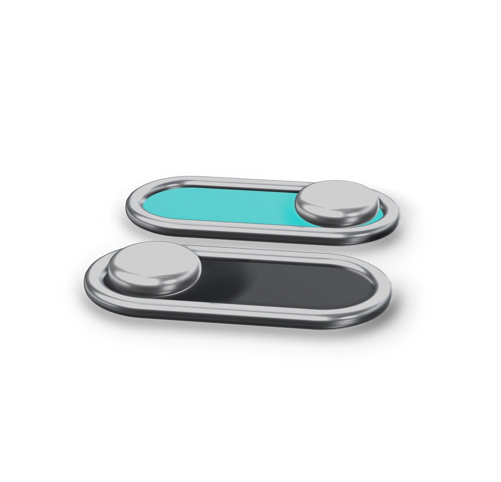
제어
기능별로 전송을
끌 수 있어요
비밀번호 입력칸은 기록하지 않아요. 비밀번호 관리자와 키체인 같은 앱은 이름과 시간만 남겨요.
자주 묻는 질문
앱, 창 제목, 주소, 파일 경로, 화면 글자, 스크린샷, 다운로드한 파일, AI 코딩 도구(Claude Code, Codex CLI)에 입력한 메시지를 기록해요. 2분 넘게 입력이 없으면 자리 비움으로 기록해요. 녹음은 직접 시작했을 때만 하고 Mac 안에서 글로 받아써요.
내 Mac에 저장해요. SILLOG은 자체 서버를 두지 않아요.
업무를 정리하고 채팅에 답하려고 기록 내용을 내가 연결한 AI 계정으로 보내요. 대표 화면의 스크린샷도 함께 보내요. 채팅에서 찾아본 자료, 허용한 웹 검색과 커넥터 통신도 밖으로 나가요. 보낸 내용은 활동 로그에서 확인하고 기능별로 전송을 끌 수 있어요.
ChatGPT 구독과 API(OpenAI 호환) 가운데 하나를 연결해요. ChatGPT 구독으로 채팅하려면 Codex CLI나 Codex 앱이 설치되어 있어야 해요. API로 연결하면 호출 요금이 나와요.
기록하지 않을 앱을 추가하면 그 앱은 이름과 시간만 남겨요. 비밀번호 관리자와 키체인은 처음부터 제외되어 있고 비밀번호 입력칸은 기록하지 않아요.
기본 7일이고 1일에서 90일 사이로 바꿀 수 있어요.
지금은 macOS 14 이상의 Apple 실리콘 Mac에서 쓸 수 있어요. Windows와 모바일은 아직 준비 중이에요.